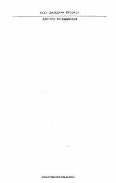

TMSovuq urush davridagi xalqaro josuslik va siyosiy intrigalar haqidagi qiziqarli detektiv roman.
Ushbu asar mashhur sovet yozuvchisi Yulian Semyonov qalamiga mansub bo'lib, siyosiy detektiv janrida yozilgan. Roman sovuq urush davridagi xalqaro josuslik o'yinlari va TASS axborot agentligining faoliyati fonida kechadigan murakkab voqealarni o'z ichiga oladi.